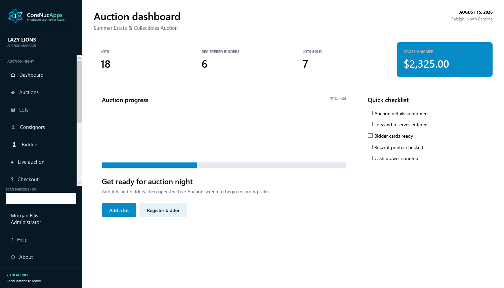
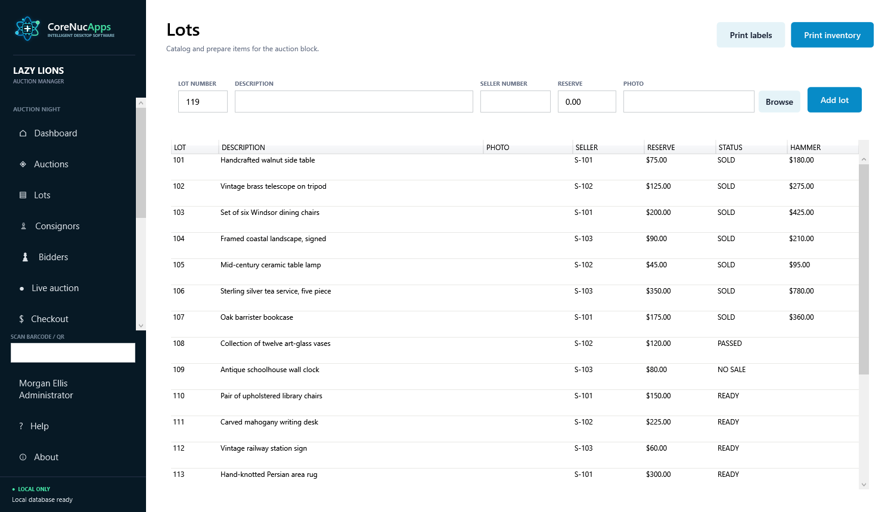
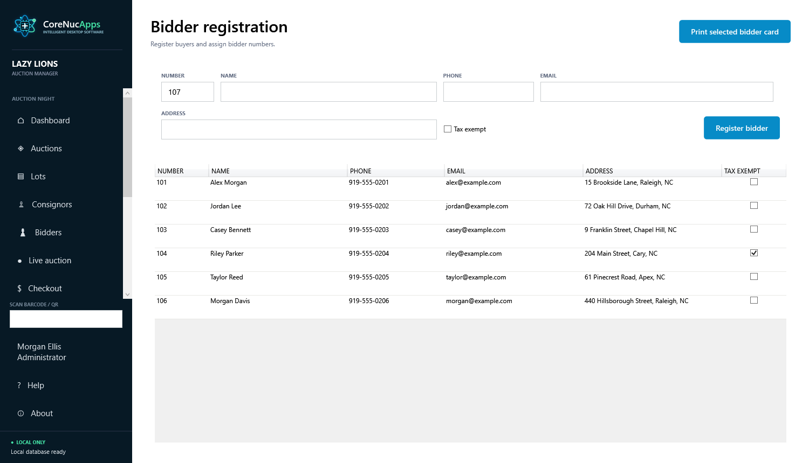
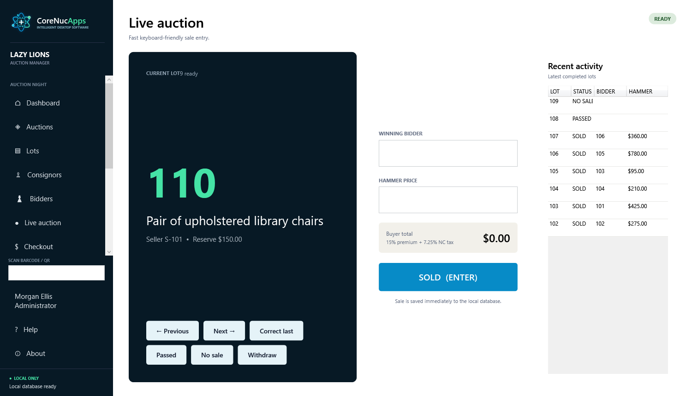
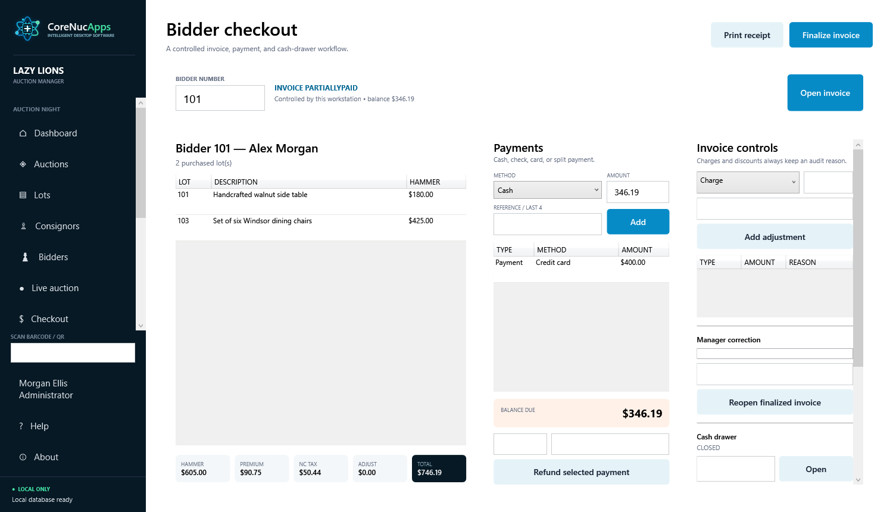
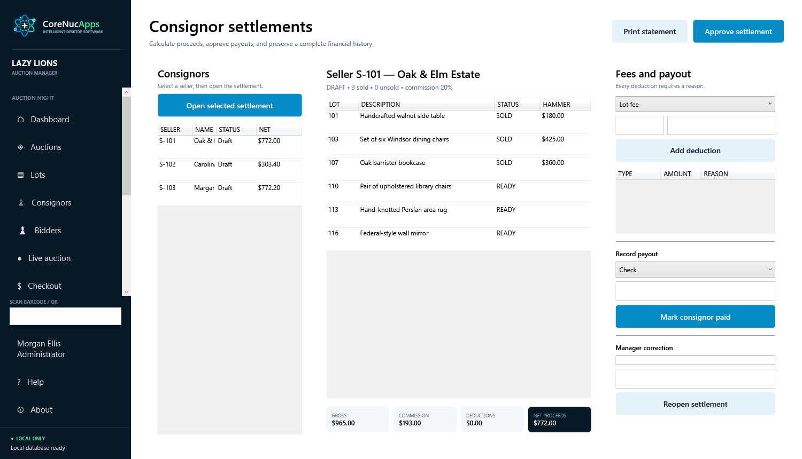
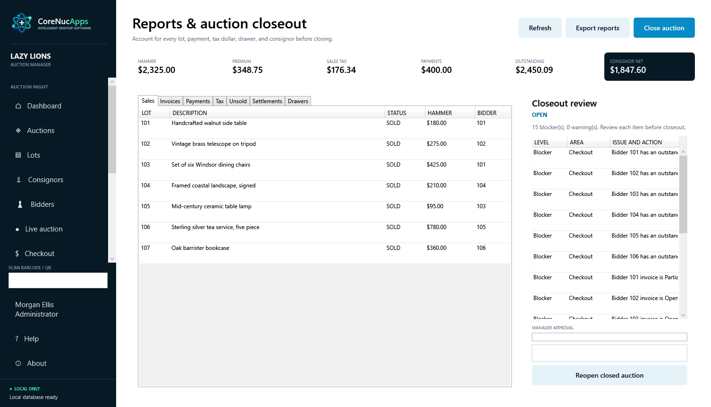
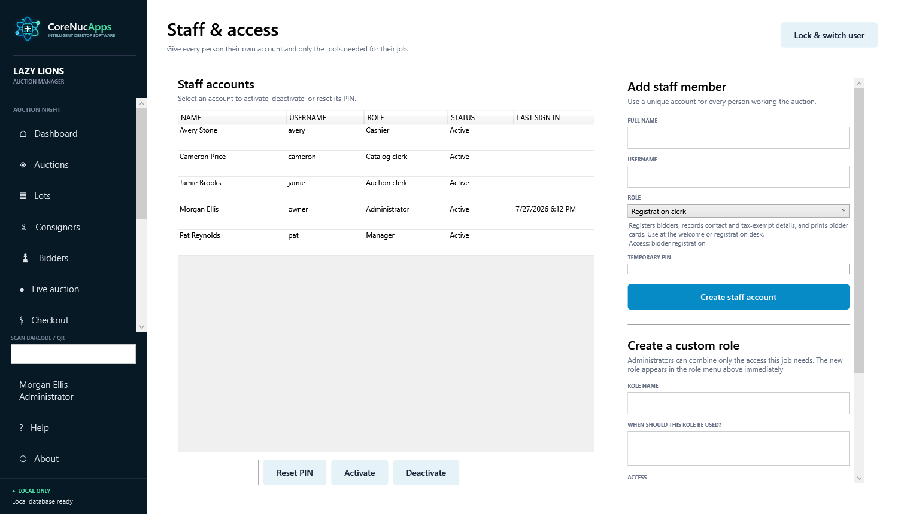
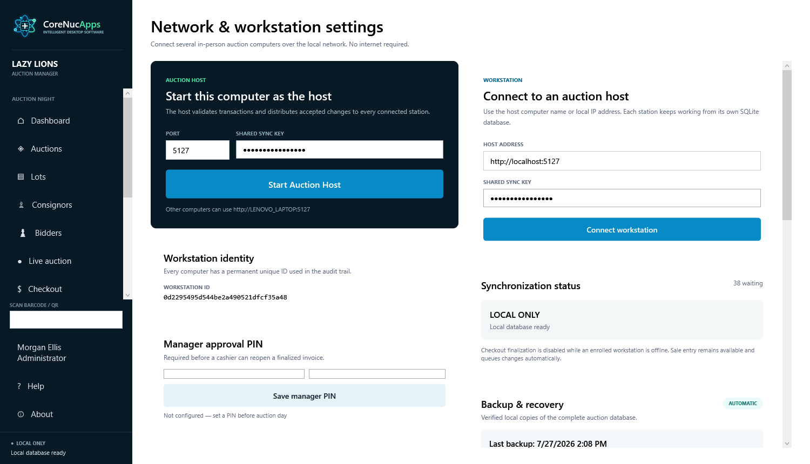
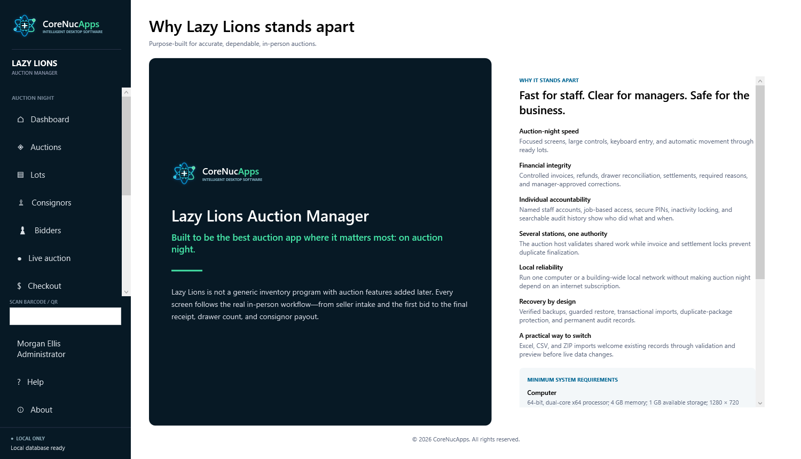

Built for the Complete Auction Workflow
The screenshots below show the primary Windows application screens. Select any image to open the full-size version.
The current build also adds guided first-run setup, bulk catalog tools, buyer agreements, live Command Mode, pickup and item release, customer communications, privacy and consent controls, operational analytics, accounting exports, encrypted backups, interrupted-session recovery, and expanded accessibility support.
Auction Dashboard

What This Shows
- Active auction name, date, and location.
- Counts for lots, registered bidders, and lots sold.
- Gross hammer total and overall auction progress.
- A quick checklist for details, reserves, bidder cards, printer, and cash drawer.
Lot Catalog

What This Shows
- Lot numbers, descriptions, seller assignments, reserves, and optional photos.
- Ready, sold, passed, and no-sale statuses.
- Recorded hammer prices for completed lots.
- Actions for adding lots and printing labels or full inventory.
Bidder Registration

What This Shows
- Unique bidder numbers and buyer names.
- Phone, email, and postal address fields.
- Tax-exempt status for documented buyers.
- One-click printing for the selected bidder card.
Live Auction

What This Shows
- Large current lot number, description, seller, and reserve.
- Winning bidder and hammer-price entry.
- Sold, passed, no-sale, withdraw, navigation, and correction controls.
- Buyer premium and tax preview plus recent completed-lot activity.
Bidder Checkout

What This Shows
- Purchased lots with hammer totals, premium, tax, adjustments, and invoice total.
- Cash, check, card, and split-payment entry with references.
- Controlled charges, discounts, refunds, and manager corrections.
- Invoice status, remaining balance, receipt printing, finalization, and drawer operation.
Consignor Settlements

What This Shows
- Seller list with settlement status and net proceeds.
- Sold and unsold lots associated with the selected consignor.
- Gross sales, commission, deductions, and calculated net payout.
- Statement printing, manager approval, payout reference, and controlled reopening.
Reports and Auction Closeout

What This Shows
- Top-level hammer, premium, tax, payment, outstanding, and consignor totals.
- Separate views for sales, invoices, payments, tax, unsold lots, settlements, and drawers.
- Closeout blockers and warnings with required actions.
- Report export, manager-approved closure, and controlled reopening.
Staff and Access

What This Shows
- Named staff accounts with usernames, roles, status, and last sign-in.
- PIN reset, activation, deactivation, and user-switching controls.
- Built-in roles for registration, catalog, auction, cashier, manager, and administrator duties.
- Custom-role creation for organizations with specialized jobs.
Network and Backup Settings

What This Shows
- Auction host configuration with port and protected shared sync key.
- Workstation connection address and synchronization status.
- Permanent workstation identity used by the audit trail.
- Manager approval PIN plus automatic backup and recovery controls.
Why Lazy Lions Stands Apart

What This Shows
- A purpose-built workflow from seller intake through final payout.
- Auction-night speed with focused screens and large controls.
- Financial integrity, individual accountability, and host-authoritative operation.
- Local reliability, verified recovery, migration tools, and system requirements.